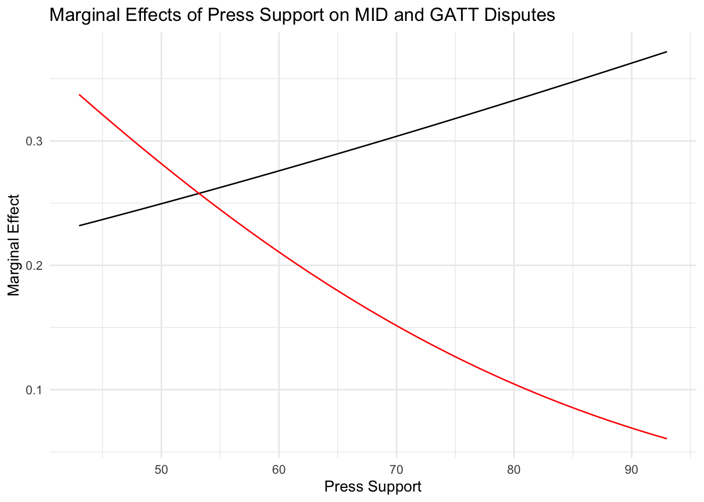

Models for nominal variables are interesting because they derive so neatly from utility theory - this is the ideal of EITM. But it also means that we have to consider how assumptions from theory manifest themselves in econometric models. This alone is an interesting topic, because we’d want theory assumptions accurately reflected in the statistical model.
Independence of Irrelevant Alternatives (IIA)
Both of the MNL and CL models assume IIA.
IIA is a rationality assumption about individual behavior rather than an econometric assumption.
The econometric realization of IIA is i.i.d. - we assume the errors surrounding each value of \(Y=j\) for \(j-1\) alternatives are i.i.d
This means we do make an econometric assumption about homogeneity of choices and individuals.
What is IIA?
Ordeshook (1986) has a well-known example.
A diner goes into a restaurant and wants to order soup. He is offered either Chicken or Vegetable and he chooses chicken - thus, his preference ordering must be Chicken p Vegetable.
Soon, the waiter returns to say they also have noodle soup; the diner changes his order from Chicken to Vegetable.
You can see that the introduction of noodle soup should have no effect on his ranking of Chicken above Vegetable.
He might prefer Chicken p Vegetable p Noodle or Chicken p Noodle p Vegetable, but the original ranking of Chicken p Vegetable must remain unaffected.
The addition of Noodle cannot change his pairwise ordering of Chicken and Vegetable.
IIA in the MNL
If the introduction of new alternatives changes the order of individual preferences, then IIA fails. In estimation, we consider the ratio of the probabilities of outcomes \(j\) to \(k\) where these are two categories in \(Y\); note how this relies explicitly on the notion that MNL is a set of binary logits, pairwise comparisons:
Consideration of another outcome, \(l\), cannot influence this ratio. This ratio is the ratio of preferences for \(j\) to \(k\), all other options irrelevant.
Related to Preference Transitivity
Think of this in terms of the transitivity requirement:
Suppose alternatives \(a,b,c\) where \(a>b\) – any of the following can be true: \[\begin{aligned}
c>a>b \nonumber \\
a>c>b \nonumber \\
a>b>c \nonumber
\end{aligned}\]
…because all retain \(a>b\). Consideration of \(c\) cannot upset the relation of \(a>b\).
So the ratio of \(Pr(Y=j)\) to \(Pr(Y=k)\) must be entirely independent of other alternatives; adding other choices to the outcome variable cannot change this ratio or IIA is violated.
To link this to the soup example above, if introducing noodle soup to the menu changes the ratio of \(\frac{P(chicken)}{P(vegetable)}\), then it must do so by taking probability away disproportionately from one choice rather than the other. If the probability of one shifts while the other does not, then introducing noodle soup shifts the diner’s preference order.
Red/Blue Busses
Here’s another example that appears in virtually every econometrics book. Suppose we want to study the how individuals are transported to work. Half of our sample takes a car, the other half takes a red bus from the Red Bus Co. Thus,
The ratio of the probability of driving a car to the probability of taking the red bus is 1. So no matter what, we cannot introduce another alternative that changes this ratio.
A new bus company comes to town, the Blue Bus Co. It’s unlikely the car drivers will switch to the blue bus company - they’d have been riding the red bus all along. Thus, the Blue Bus Co. is going to compete with the Red Bus Co. and will draw customers disproportionately from the Red Bus Co. So,
The Blue Bus Co. drew from the probability of taking a red bus, but not from the probability of taking a car, so the ratio of the probability of taking a car to the probability of taking the red bus changed. Introducing the Blue Bus alternative violated IIA. In order not to have violated IIA, Blue Bus Co. would have had to have taken probability equally from both categories, car and red bus.
If we were estimating \(Pr(Blue Bus|X)\), the effects of \(X\) would have to increase or decrease the chances of choosing the Blue Bus proportionally to increasing or decreasing the chances of Red Busses or cars or rickshaws, or whatever, so that the ratio of the expected conditional probabilities would remain constant.
For this to happen, the unobservables that influence these choices would have to be independent of one another.
An important implication
If an alternative \(j\) is a near substitute for alternative \(k\), but not for alternatives \(l,m, \ldots z\), then the alternative \(j\) is neither independent nor irrelevant. In other words, MNL and CL models may be inappropriate for questions about substitution because of the IIA assumption. This would be unfortunate since a lot of models of substitution are MNL.
Empirical implication
The error terms of outcomes \(j\) and \(k\) are not correlated by assumption. If the IIA assumption fails, then the error terms are correlated and probably heteroskedastic as well (so neither independent nor identically distributed).
Moreover, the model is misspecified; we assume individuals making decision behave according to IIA but they don’t, so our model does not represent their behavior. In the end, estimates are biased and can be inefficient as well.
Relating IIA to i.i.d.
In the 1996 Presidential election, the public faced a choice among three candidates, Bill Clinton, Bob Dole and Ross Perot. Lucky voters ranked these three fine gentlemen and cast their votes. Suppose the distribution of preferences just between Clinton and Dole prior to Perot’s entry looked like this:
Clinton = .6 Dole = .4
Voters preferred Clinton by a 3:2 ratio over Dole.
Suppose, however, that once Ross Perot entered the race, he offered a morally founded and liberal platform such that he took virtually all of Clinton’s support, leaving Clinton with just 10% of the voters, so
Clinton = .1 Dole = .4 Perot = .5
Consistent with the rational choice requirement, voters have shifted from one of the original alternatives to the new alterative, not to the other original choice. Inconsistent with the econometric requirement, the ratio of Clinton to Dole is not the same once Perot is in the race - it was originally 3:2, and now it is 1:4. So on the surface, it appears as if we have maintained the formal requirement and violated the econometric one.
But look more closely.
It is also true that voters now prefer Dole to Clinton by a 4 to 1 ratio, so in fact, the formal requirement also fails. Thus, it appears as if the formal and econometric versions of the requirement have some equivalence.
The choice between Clinton and Dole is correlated with the Perot option. The fact that Perot is an option shifts the probabilities for Clinton and Dole unevenly - to be clear, if Perot took the same proportion of the vote from each such that the ratio of Clinton to Dole was still 3:2, then IIA would be intact.
The factors that make voters choose Perot are correlated with the factors that make voters choose Clinton or Dole. If we include those factors in the model (instead of having them in the errors), we reduce the correlation of the errors. This is a specification problem.
IIA in reality
As Long & Freese point out, testing IIA is anything but straightfoward - they essentially advise against trusting tests. Paul Allison expresses similar skepticism of IIA tests.
My intuition is models violating IIA often don’t have different estimates than models accounting for it. why account for it? To be sure estimates are stable, and to evaluate model specification. correlation of the errors around the outcomes indicate some common factors predict those outcomes; they’re in the error because they’re excluded from the model.
How to relax IIA? By relaxing i.i.d.
multinomial probit (choice specific variables like CL) - structured like CL, but probit, so normal, but the multivariate normal distribution with j-1 dimensions; estimates the correlation of the errors, thereby permitting non-independence. multivariate probit (case specific variables like MNL) - a set of simultaneous probit equations, \(x\) variables can differ across outcomes; measures correlations among errors, permitting non-independence. mixed logit - (choice or choice by case specific variables) - estimates fixed and random parameters; the latter estimates effects across individuals, permitting variation, and estimates that variation.
Here’s an account of how different methods impose IIA or i.i.d. restrictions.
Models & Assumptions
Model
IIA
i. i. d.
Comment
Independent ariables
MNL/CL
Yes
Yes
i.i.d Logistic
\(X ~\forall~ Y_i\); CL varies
MNP
No
No
not independent, but identical
\(X ~\forall ~Y_i\)
MVP
No
Partial
not independent, but identical
\(X_i ~\text{for each} ~ Y_i\)
There are several approaches to relaxing the IIA assumption including the multinomial probit, the heteroskedastic extreme value model, and the multivariate probit. The two probit models, rooted in the standard normal distribution, take advantage of the multivariate normal distribution to allow for correlation among the errors. The HEV model allows the variance of the errors to vary across the choices, so relaxes the “identically distributed” assumption, though still requires the errors are independent. Let’s look at the multinomial probit and the multivariate probit in more detail.
Multivariate probit
The idea here is to estimate a system of equations, one for each outcome. The errors in these equations can be correlated, so the outcomes are not assumed independent. The model is a set of \(J\) probit equations, one for each outcome, \(j\). The \(x\) variables can vary across the equations, so the \(x\) variables for \(y_1\) can be different from the \(x\) variables for \(y_2\). The errors are correlated across the equations, so the errors for \(y_1\) are correlated with the errors for \(y_2\). The model estimates the correlation of the errors, \(\rho\). This both measures the extent to which the outcomes are correlated and relaxes the IIA (i.i.d.) assumption by “explaining” the correlation.
Thinking of the foreign policy choice data we’ve been working with, we have so far conceived of the \(y\) variable as a single, categorical but unordered variable:
0 = no action
1 = MID only
2 = GATT only
3 = both MID and GATT
Instead, we could define 2 dummy variables this way:
Militarized Interstate Dispute - 0=no, 1=yes
GATT dispute - 0=no, 1=yes
such that both variables can equal zero at the same time (indicating neither a MID nor a GATT dispute occurred) or they can both equal one at the same time (indicating both types of dispute occur at the same time). Note these represent the same information as the categorical variable. Now, we’ve got two \(y\) variables and we could estimate two probit equations:
The binary variables option is an elegant way to capture all these possibilities.
Having two dependent variables implies two equations. -If we estimate the two equations as individual regressions, their errors are uncorrelated by construction; we impose i.i.d. by treating the alternatives as zero.
If we estimate these equations simultaneously, that is as a system, we must say something specific about their errors and the relationship among their errors.
As a set of equations, we can (perhaps should?) have different sets of \(X\) variables predicting the outcomes; \(X\) is restricted across outcomes in most of the choice models we’ve talked about.
Why probit? We take advantage of the dimensionality of the normal distribution, and use the multivariate (in this case, bivariate) normal distribution - so the outcomes are jointly determined, and the unobservables are correlated, \(\rho\). In the single equation probit, we assume the errors are univariate normal.
code
library(mvProbit)fpdata <-read_dta("/Users/dave/Documents/teaching/606J-mle/2024/topics/choicemodels/nominaldata.dta")fpmvp <-filter(fpdata, !is.na(unemp2) &!is.na(pressupp) &!is.na(pelect) &!is.na(approval))mvp <- mvProbit <-mvProbit(cbind(mid, gatt) ~ unemp2 +pressupp +pelect , data =as.data.frame(fpmvp), iterlim =20, nGHK =100)library(kableExtra)# Extract coefficients and standard errorscoef_table <-summary(mvp)$estimatecoef_df <-as.data.frame(coef_table)# Add column for p-valuescoef_df$p_value <-2* (1-pnorm(abs(coef_df$`t value`)))n_cols <-ncol(coef_df)# Create appropriate column names based on the number of columnsif (n_cols ==3) { col_names <-c("Estimate", "Std. Error", "z value")} elseif (n_cols ==4) { col_names <-c("Estimate", "Std. Error", "z value", "Pr(>|z|)")} else { col_names <-colnames(coef_df) # Use existing column names if structure is unexpected}# Create the tablekable(coef_df, format ="html",digits =3,col.names = col_names,caption ="MVP Model Results") %>%kable_styling(bootstrap_options =c("striped", "hover", "condensed"),full_width =FALSE) %>%add_header_above(c(" "=1, "Coefficients"= (n_cols ))) %>%row_spec(0, bold =TRUE)
MVP Model Results
Coefficients
Estimate
Std. error
t value
Pr(> t)
p_value
b_1_0
-1.433
0.486
-2.948
0.003
0.003
b_1_1
0.062
0.039
1.576
0.115
0.115
b_1_2
0.008
0.005
1.605
0.108
0.108
b_1_3
-0.014
0.147
-0.096
0.924
0.924
b_2_0
-0.331
0.523
-0.633
0.527
0.527
b_2_1
0.155
0.043
3.609
0.000
0.000
b_2_2
-0.023
0.006
-3.993
0.000
0.000
b_2_3
-0.024
0.171
-0.142
0.887
0.887
R_1_2
-0.023
0.094
-0.245
0.806
0.806
Interestingly, the main results from the multinomial models hold in general, but as the hypothesis test on \(\rho\) (which is the correlation between the disturbance terms in the two equations) shows, the errors in the two equations are correlated significantly. Some interpret this as evidence IIA does not hold (see Alvarez & Nagler’s paper) and some economists suggest this is evidence of substitution.
code
library(mvProbit)library(kableExtra)mvp <- mvProbit <-mvProbit(cbind(mid, gatt) ~ unemp2 +pressupp +pelect , data =as.data.frame(fpmvp), iterlim =20, nGHK =10)X <-as.matrix(expand.grid(intercept=1, unemp2 =median(fpdata$unemp2, na.rm=TRUE),pressupp =seq(43,93, length.out =50),pelect =0,approval =median(fpdata$approval, na.rm=TRUE)))# Calculate expectations and marginal effectseffects <-data.frame(mvProbitExp(~ unemp2 +pressupp +pelect , coef=mvp$estimate, data=as.data.frame(X)), X)# plot V1 V2 over pressuppggplot(effects, aes(x=pressupp, y=V1)) +geom_line() +geom_line(aes(y=V2), color="red") +labs(title="Marginal Effects of Press Support on MID and GATT Disputes",x="Press Support", y="Marginal Effect") +theme_minimal() +theme(legend.position="none")

Closing out Choice Models
MNL is essentially a collection of simultaneous binary logits.
MNL and CL are identical models.
Only the data structure and what we can measure vary between MNL/CL.
MNL has \(n\) observations, data only on characteristics of \(i\).
CL has \(n*j\) observations, data on attributes of \(j\) (and perhaps of \(i\) as well).
both require IIA
IIA requires that, for any pairwise comparison of outcomes, \(i, j\), the ratio of \(Pr(i)/Pr(j)\) must not change due to the existence of any other option, \(k\).
In the model, the ratio of those probabilities conditional on the \(X_i\) must be consistent.
Any time we can conceive of the choice outcomes as substitutes, the ratio will certainly change; so IIA fails.
In the econometric model, we assume the disturbances around outcome \(j\) are uncorrelated with the disturbances around outcome \(k\). If IIA fails, this fails, and the errors are not i.i.d.
Solutions usually involve relaxing the independence assumption.
Simplest is to use the n-variate normal, dimensions correlated by \(\rho_{j,k}\).
One model using this is the multinomial probit. It restricts the \(x\) to be the same across the outcomes (just like MNL).
Another using the normal is the multivariate probit (a set of simultaneous probit equations); the \(x\) can vary across outcomes.
In either case, computation on the n-variate normal gets very difficult with higher dimensions ($>$2 or 3 outcomes). Usually done with simulations (this is what Stata does).
Either model resolves IIA problem by permitting correlation of errors such that shifts in the ratio of probabilities is permissible.
You should have the idea that substitution is a major concept lurking beneath all these choice models, or certainly beneath all their applications.
Imagine that two choices, A and B. A is more expensive, but comes in lots of colors. B is cheaper, but only comes in black. Individuals will substitute one for the other based on how they evaluate the tradeoff between price and color.
Those who really prefer color will choose A; those that really respond to price will choose B.
If a new alternative, C, were introduced and it was identical to A, it would draw entirely from individuals who preferred A in the first place, and would draw nothing from B.
But suppose new alternative C offers some limited color options, and is cheaper than A. - Will C draw equally from A and B? Not necessarily. - Will C draw from A and B for different reasons? Yes.
In other words, an alternative, C, alters the (pairwise) choice probabilities between A and B at different rates, and for heterogeneous reasons. Some substitution to C occurs because of price, some because of color - there is no reason to believe movement to C is at equal rates with respect to price {and} with respect to color. If the rate of substitution from A to C is different from the rate of substitution from B to C, then IIA fails. If the rate of substitution from A to C is different between those who substitute based on price and those who substitute based on color, we have a different problem.
This restriction is known as the Invariant Proportion of Substitution (IPS), due to Steenburgh (2008).
IPS: the restriction in essentially every choice model that:
\[
\frac{\partial(Pr(y_i))/\partial(x_{i,a})}{\partial(Pr(y_j))/\partial(x_{i,a})} = \Psi_{i, a} ~~\forall a \nonumber
\]
The rate of substitution between \(i,j\) in this example does not depend at all on which attribute, \(a\) is changed or improved. Change in attribute \(x_{i, a}\) produces a constant rate of substitution, \(\Psi\) regardless of which attribute actually changed.
How significant a restriction is IPS? Conceptually, perhaps it is quite restrictive - the rates of substitution cannot vary across attributes in any standard choice model (GEV, correlated normal). If we believe individual choices among A, B, and C are driven in different directions by different attributes of A, B, and C, then assuming this cannot happen is a problem.
Solutions - few practical ones exist. The “mother” logit or “universal” logit (McFadden 1975) is possible, but some suggest it departs random utility conditions in other ways. One innovation is the “flexible substitution logit.” (Liu, Steenburgh, and Gupta 2011)
The punch lines are these:
choice models are very flexible.
choice models appeal because they arise so directly from random utility models.
IIA is a significant restriction, but fairly easy to relax.
IPS is a newly recognized restriction - how consequential it is is not really known.